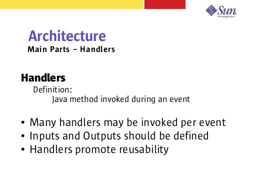

Notes:
Handlers provide a place to write Java code -- virtually everything else is inXML or a JSP.
Handlers are invoked during an event, most of which are standard JATO events such as beginDisplay and endDisplay. However, we have added new events as well, these include: beforeCreate, afterCreate, error, and several for the LH wizard. The event type “command” is used for handling button and href actions.
I/O to and from handlers should be well defined so that validation can occur at runtime when the handlers are invoked. The I/O definition also allows the framework to perform type conversion on these arguments. JATO's TypeConverter is used to perform type conversions. This class allows type mappings to be added – see the JATO documetation.
Traditional JATO did not provide a convenient way to break up Java code. Handlers are intended to be small discrete pieces of logic, enabling them to be reused more easily than a large block of code.